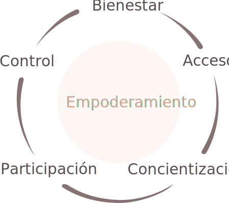

Unidad 5
Ciudadanía y participación política de las mujeres
En América Latina en la década de los 80 comenzó el proceso de descentralización de los gobiernos locales, a través de una serie de reformas destinadas a redefinir el rol del estado nacional. Este proceso de modernización tuvo lugar en el contexto de la crisis económica y de las políticas de ajuste estructural exigidas por el ”Fondo Monetario Internacional” (FMI) para mejorar la eficiencia técnica, administrativa y financiera de la gestión pública.
Por otro lado, el fomento de la descentralización también fue influenciado por los procesos de transición democrática de regímenes militares a gobiernos civiles —Chile, Argentina, Uruguay, Brasil, Perú, Bolivia—, de apertura democrática —México—, y por los acuerdos de paz de países como El Salvador y Guatemala. En este nuevo escenario, los incipientes movimientos sociales, las luchas de las organizaciones populares, urbanas y rurales, y las movilizaciones por la democracia y los derechos humanos, contribuyeron decisivamente a la redemocratización y a la apertura de nuevos espacios de participación social y política en los ámbitos municipales.Massolo, Alejandra, “Participación política de las mujeres en los gobiernos locales en América Latina”, ”Instituto Internacional de Investigaciones y Capacitación de las Naciones Unidas para la Promoción de la Mujer” INSTRAW, República Dominicana, 2006
No fue hasta la década de los noventa que los movimientos y organizaciones de mujeres comenzaron a orientar su mirada al potencial transformador de la descentralización y los municipios.
Hasta entonces habían dirigido sus reivindicaciones al estado central, pensando que el ámbito municipal no podría responder a sus demandas. Además, la marca neoliberal de las reformas descentralizadoras generaban desconfianza al interior del movimiento. Temían que la falta de recursos y apoyos suficientes para una eficiente gestión municipal, podría significar nuevamente el aumento de trabajo no remunerado para las mujeres y su marginación de los puestos, comisiones y áreas municipales que recibieran recursos y que serían codiciados por los hombres.
En el ámbito local, el municipio adquiere una importancia enorme ya que constituye el referente político-administrativo territorializado. Esta cercanía abre un sinfín de oportunidades a la participación de la población en la gestión municipal. Sin embargo, para que la descentralización se convierta en un recurso realmente eficaz es necesario que el traspaso de competencias y funciones vaya acompañado de los recursos financieros suficientes, y de un nivel adecuado de capacidades políticas, institucionales y técnicas por parte de las autoridades municipales. Asimismo, se requieren mecanismos efectivos de participación ciudadana y rendición de cuentas para asegurar el potencial democratizador de la descentralización. De lo contrario, el poder puede volver a concentrarse en las élites locales.Massolo, Alejandra, “Participación política de las mujeres en los gobiernos locales en América Latina”, ”Instituto Internacional de Investigaciones y Capacitación de las Naciones Unidas para la Promoción de la Mujer” INSTRAW, República Dominicana, 2006.
Cuando estos objetivos están cubiertos, la descentralización posibilita una interlocución más ágil entre el gobierno local y la sociedad civil, dando lugar a una apertura de espacios y participación en los que pueden integrarse nuevos actores, como las organizaciones de mujeres. Se trata de un ámbito con un gran potencial para posicionar los intereses prácticos y estratégicos de las mujeres, formular e implementar políticas públicas de igualdad de oportunidades, desarrollar medidas afirmativas para fomentar su ciudadanía y su participación política, prevenir la violencia de género, etc. Sin embargo, la práctica no se ha mostrado tan optimista y, a menudo, las mujeres encuentran más prejuicios y mayores obstáculos en el ámbito local que en el nacional.
La revalorización y revitalización de las instituciones de gobierno municipal para la democracia y el desarrollo, ha impulsado una nueva corriente de interés de las mujeres y diversas agencias por los asuntos de la participación política y la igualdad de oportunidades dentro del ámbito local. Dan cuenta del interés y revalorización los testimonios, intercambios de experiencias, sistematizaciones, estudios y reflexiones que se han venido produciendo en torno a las interrelaciones entre las mujeres y los gobiernos locales. Un rico acervo acumulado al que todavía le faltan trabajos de investigación, sistematizaciones y estudios comparados, así como fuentes de información regulares y actualizadas.
A pesar del importante activismo social a nivel local y comunitario de las mujeres, aún no alcanzan porcentajes importantes en la ocupación de cargos.
Entre los principales obstáculos para aumentar la presencia femenina en el ámbito local, destacan:
La progresiva articulación de redes y asociaciones de mujeres municipalistas que tuvo lugar a finales de los 90, junto con la incorporación de la perspectiva de género en las políticas y los programas de la agenda municipal, son sin duda algunos de los cambios más importantes que han tenido lugar en este ámbito. Las redes de mujeres municipalistas han avanzado gran parte del camino a través de la articulación de consensos más allá de las diferencias partidarias, ideológicas o identitarias y la construcción de un frente común para protegerse de la hostilidad masculina al interior de las alcaldías.
A través del trabajo colectivo están logrando relevar y visibilizar el problema de las desigualdades de género, promueven la formación de las mujeres para mejorar sus capacidades e intercambian conocimientos, aportan al fortalecimiento institucional de los municipios y defienden la participación femenina en la toma de decisiones de los gobierno locales.Massolo, Alejandra, “Participación política de las mujeres en los gobiernos locales en América Latina”, ”Instituto Internacional de Investigaciones y Capacitación de las Naciones Unidas para la Promoción de la Mujer” INSTRAW, República Dominicana, 2006
La atención prestada por los municipios a la igualdad de género es todavía muy limitada. En pocos casos todavía se han desarrollado políticas municipales de igualdad o planes de igualdad. Ha sido más frecuente la creación de oficinas de la mujer para atender los problemas específicos de las mujeres. Pero generalmente estas instituciones no han contado con presupuestos ni personal suficiente, han quedado marginadas de la toma de decisión municipal y no se ha traducido en un ejercicio de integración en el quehacer municipal.
Como se ha mencionado siendo el municipio la instancia de representación y gobierno más próxima a la ciudadanía, vinculada a los asuntos de la vida cotidiana, paradójicamente no ha facilitado el acceso de las mujeres a los cargos de representación municipal. Los gobiernos locales latinoamericanos carecen de pluralidad de género, puesto que son mayoritariamente encabezados por hombres. Claramente no se verifica una correlación positiva entre mayor cercanía y mayor participación de las mujeres en los cargos de representación y dirección. Por lo cual, el principio de proximidad que legitima específicamente al gobierno local, no funciona como principio que favorece la equidad de género. Massolo, Alejandra, “Participación de las mujeres en los gobiernos locales de América Latina”, en “Memoria del Primer Encuentro Nacional de Presidentas Municipales”, Inmujeres, México, 2003.
La ciudadanía tiene que ver con la pertenencia a un grupo o comunidad que confiere derechos y responsabilidades como resultado de tal membresía. Puede ser una relación con el Estado y/o entre integrantes de un grupo, sociedad o comunidad. La ciudadanía es a la vez una condición —o identidad— y una práctica o proceso de relacionarse con el mundo social a través del ejercicio de derechos / protecciones y del cumplimiento de obligaciones. Sus significados varían de una región a otra y de una comunidad a otra. No se trata, entonces, de cómo alcanzar la ciudadanía, sino de cómo ésta puede ser utilizada para explicar y fortalecer aquellos elementos en las vidas de las personas que constituyen su pertenencia a una comunidad.
La ciudadanía es un concepto abstracto y, por lo tanto, se debe tener mucho cuidado al explicar lo que significa en la práctica y lo que efectivamente puede hacerse en el contexto de las intervenciones y políticas de desarrollo. Los proyectos de desarrollo que potencian la capacidad de los grupos marginados de tener acceso a los cuerpos de toma de decisiones e influir en éstos están trabajando con conceptos de ciudadanía implícitamente, si no de manera explícita. La ciudadanía tiene que ver con instituciones, políticas y estructuras concretas y con las formas en que las personas pueden moldearlas utilizando ideas acerca de los derechos y la participación.
Junto al resurgimiento de la democracia, América Latina es testigo de un giro visible hacia lo que se percibe como la feminización de la política. En la última década, la participación de la mujer aumentó, en promedio, de 9% a 14% en el poder ejecutivo —en posiciones ministeriales—, de 5% a 13% en el senado y de 8% a 15% en la cámara baja o en parlamentos unicamerales. Sin embargo, este nuevo período democrático ha coexistido con una pérdida de la credibilidad y del poder de los partidos políticos tradicionales. Los movimientos sociales de base y otros movimientos ciudadanos, inclusive los de la mujer y de los pueblos indígenas, en parte han llenado el vacío de liderazgo político que dejaron los partidos tradicionales. Esta ola democrática ha cortejado a las votantes mujeres y les ha permitido expresar y desempeñar sus propias preferencias políticas —no las de sus maridos—. Las mujeres han florecido en este nuevo escenario democrático como votantes con poder de decisión, como líderes políticas y como organizadoras políticas de movimientos de base.Buvinic, Mayra y Vivian Roza, “La mujer, la política y el futuro democrático de América Latina”, BID, Washington DC, 2004
Se podría afirmar que existe una ley de hierro relativa al ingreso de las mujeres a la esfera pública. Al traspasar los límites de la esfera privada, la mayoría de ellas desarrollan actividades análogas a las que realizan en la esfera doméstica. Muchas son las mujeres que al incorporarse al mercado laboral, desempeñan actividades que reflejan el trabajo que tradicionalmente realiza en el hogar, o sea, tareas que por lo general representan una proyección social del trabajo doméstico, cuando no es simplemente el propio trabajo doméstico realizado con remuneración, como es el caso de las empleadas domésticas. Pero ¿qué sucede cuando la mujer ocupa puestos públicos? En muchos casos la actuación de la mujer sigue este mismo patrón, es decir, gravitan alrededor de actividades que de cierta forma reflejan también el mundo privado. Cuando raramente alcanzan altos puestos de la jerarquía burocrática del aparato estatal, lo hacen como ministras de educación, bienestar social y algunas veces de salud. Históricamente han sido pocas las mujeres que consiguen traspasar las barreras en el área judicial y ascender a los tribunales superiores.
En general, también sucede lo mismo en cuanto a la actividad política de las mujeres que tienden a dedicarse a realizar acciones femeninas con una fuerte preocupación maternal. Esa ha sido la principal característica de la participación política de la mujer tanto en los movimientos sociales como en las instituciones estatales. Estas especificidades representan la simple manifestación de los efectos de la estructura patriarcal a la que están sometidas las mujeres, y que forjan culturalmente la ideología de la femineidad. Una ideología que determina a la maternidad como el elemento constitutivo de la identidad cultural y la personalidad femenina. La incorporación de las mujeres en los movimientos sociales se realiza a partir de su papel de madres de familia. Es el ejercicio de su rol de género como madres y amas de casa lo que las llevará a asumir luchas políticas y a ocupar espacios públicos en defensa de sus reivindicaciones.Costa. Ana Alice Alcantara, “En busca da cidadania plena” en Álvarez, Maria Luzia y Santos, Eunice, “Olhares & diversidades: os estudos sobre gênero no Norte e Nordeste”, Belém, REDOR/GEPEM, 1999.
En algunos casos las mujeres se movilizan siempre que sienten que está bajo riesgo la seguridad o bienestar de su familia. Este tipo de práctica es el origen de muchos movimientos sociales y por lo común torna vulnerable a las mujeres y sus movilizaciones a las manipulaciones por parte del gobierno o de los partidos políticos. Un ejemplo de ese tipo de práctica fue el movimiento de mujeres de clase media en Brasil, conocido como ”Dios, Patria y Familia” promovido por la derecha en los meses que antecedieron al golpe militar de 1964 bajo la consigna de contener el avance comunista y la destrucción de la familia y de la propiedad.
En otros países de América Latina surgieron movimientos de enorme peso político, como las ”Madres de la Plaza de Mayo” en Argentina, las ”Madres de héroes y mártires” de Nicaragua, las ”Mujeres de las ollas vacías” de Chile. Este y muchos otros casos similares en que, no obstante tener su génesis en las propias inquietudes de las mujeres, se fueron desarrollando para mostrar al mundo que lo privado es público y que lo personal es político. Son los movimientos en los que la intervención femenina se basa en su diferencia sexual. En este tipo de convocación de las mujeres, generalmente, “... se mezclan los intereses del Estado con los deberes asumidos desde la diferencia sexual por las propias mujeres, mostrando éstas públicamente, su derecho a intervenir por su responsabilidad maternal y doméstica. Es el poder maternal el que les da derecho a intervenir en el hecho histórico”Lola, Luna, “Historia, género y política” en Luna, Lola y Villareal, Norma, “Historia, género y política, movimientos de mujeres y participación política en Colombia, 1930-1991”, Seminario Interdisciplinar Mujeres y Sociedad, Barcelona: Universidad de Barcelona, 1994..
Muchos análisis coinciden en que la propia ciudadanía conquistada por las mujeres en el marco de la sociedad patriarcal, se ha enmarcado dentro de los límites de su rol materno. En el campo de la participación política en las instancias electivas, gran parte de las mujeres se han quedado en las orillas del poder. Después de la conquista del voto, la intensidad, radicalismo y movilización que la lucha sufragista alcanzó en muchos países, fue insignificante el número de mujeres postulantes a los cargos electivos en el poder legislativo y el ejecutivo El cambio en las leyes no es suficiente por sí solo para promover un cambio en los comportamientos, en la estructura social. Aún con el sufragio universal, por mucho tiempo las mujeres permanecieron sojuzgadas a la estructura patriarcal de la sociedad.
La ciudadanía conquistada fue una ciudadanía de segunda categoría, estructurada a la imagen masculina. Para ellas, la filiación electoral no tenía el mismo significado de exposición pública que lo que implicaba la postulación a un determinado cargo. La inseguridad, el desconocimiento de las reglas de este mundo público, los condicionantes culturales y psicológicos, las prácticas partidarias excluyentes... seguían actuando sobre las mujeres, manteniéndolas alejadas del poder político. Costa. Ana Alice Alcantara, “En busca da cidadania plena” en Álvarez, Maria Luzia y Santos, Eunice, “Olhares & diversidades: os estudos sobre gênero no Norte e Nordeste”, Belém, REDOR/GEPEM, 1999.
En el campo político electoral, la mayoría de las mujeres que acceden a los cargos del legislativo y del ejecutivo utilizan la misma estrategia de conservación del poder patriarcal, que las incorpora en función de los intereses del grupo familiar/político. Gran parte de ellas son esposas, hijas o familiares de políticos tradicionales. Las mujeres todavía están fuertemente subordinadas a las relaciones patriarcales de dominación, en las que la familia juega un papel fundamental. Costa. Ana Alice Alcantara, “En busca da cidadania plena” en Álvarez, Maria Luzia y Santos, Eunice, “Olhares & diversidades: os estudos sobre gênero no Norte e Nordeste”, Belém, REDOR/GEPEM, 1999.
Actualmente las mujeres están dotadas de nuevos roles, presentando nuevas orientaciones y opciones, no obstante, mantienen valores del antiguo orden patriarcal. Si bien en los últimos años hemos viviendo grandes cambios en la mayoría de ellas sus creencias políticas siguen siendo específicas en la medida en que para ellas la familia constituye el eje de los cambios que vive en relación con sus roles en la sociedad. Su actuación en la esfera pública todavía no ha conseguido romper con las determinaciones del mundo doméstico, de sus responsabilidades familiares y de su componente maternal. El feminismo político confronta duramente con una actuación que expresa una especie de cultura política construida con base en la desigualdad y la condición de subalternidad.
Los partidos políticos son organizaciones históricamente masculinas, típicas de la esfera pública. Fueron los anarquistas y la socialdemocracia europea del siglo XIX, las primeras organizaciones políticas en abrir sus puertas a las mujeres, antes que los sindicatos de la clase obrera lo permitieran. En América Latina algunas mujeres empezaron a actuar partidariamente antes de la conquista del voto, aun cuando en estas organizaciones no había ninguna preocupación por crear mecanismos para incluir a las mujeres, lo cual tardó mucho en acontecer. Fue necesaria la presión del movimiento feminista que forzó a los partidos a reconocer la importancia del electorado femenino y la necesidad de incorporar a las mujeres a sus filas.
Como hemos visto en capítulos anteriores, hacia mediados del siglo XX las mujeres obtienen el derecho a votar, sin embargo todavía deben luchar por el derecho a ser votadas. Por ejemplo, aún puede observarse la escasa y reciente presencia de mujeres en cargos ministeriales y presidenciales. Si bien las mujeres se van incorporando paulatinamente a estos espacios, hasta hace poco tiempo no han encontrado en los partidos espacios suficientes para la incorporación del enfoque de género ni en el ámbito interno de las relaciones de poder y jerarquías ni en la definición de sus prioridades o políticas a ser desarrolladas.
Como hemos visto, en los últimos años el movimiento feminista ha experimentado algunas acciones alternativas en esta relación con el poder, particularmente con respecto a los cargos electivos. Una iniciativa fundamental para la incorporación de las mujeres en estos espacios ha sido la implantación de las políticas de cuotas. Araujo, Clara, “Ações afirmativas como estratégias políticas feministas” en Bruschini, Cristina y Unbehaum, Sandra “Gênero, democracia e sociedade brasileira”, São Paulo, Fundação Carlos Chagas, 2002. Archenti, Nélida, “Representación, Ley de Cuotas y Sistemas Electorales” en “Postdata, Revista de Reflexión y Análisis Político 6”, 2000
Invisibilizadas como sujeto, las mujeres indígenas emergen conscientes y organizadas en los últimos años. Los cambios operados por ellas son notables, y muchas ocupan hoy puestos de liderazgo en sus pueblos o en los espacios del movimiento, dando voz a las preocupaciones de las otras. Entre éstas destacan en México las insurgentes zapatistas comandantes Ramona y Ana María, quienes participaron en el proceso de dialogo de los acuerdos entre el EZLN y el gobierno mexicano. En Ecuador, Blanca Chancoso que desempeñó un papel importante en la mesa de negociación ante la caída del presidente Bucaram en 1997, y Nina Pacary, que llegó a ocupar el cargo de Ministra de Relaciones Exteriores en el gobierno de Lucio Gutiérrez. Otras destacadas activistas han sido, en otros países, Mirna Cunningham —Nicaragua—, Noeli Pocaterra —Venezuela— y Otilia Lux, que ha ocupado el cargo de ministra de Educación y Cultura en Guatemala y en la ONU. Palomo Sánchez, Nellys, “Las mujeres indígenas: surgimiento de una identidad colectiva insurgente”, en “De lo privado a lo público: 30 años de lucha ciudadana de las mujeres en América Latina”, Siglo XXl Editores / UNIFEM, México, 2006.
Los espacios desde donde vienen tejiendo su visibilidad han sido la comunidad, las organizaciones mixtas, las cooperativas de artesanas, los comités de salud y las organizaciones de mujeres; espacios donde las protagonistas son ellas mismas tratando de dar respuesta a sus propias necesidades, a la problemática de la equidad de género, la educación y capacitación, la comercialización de artesanías, las denuncias contra los usos y costumbres que implican en muchos casos una denigración de la dignidad de las mujeres, violencia intrafamiliar y comunitaria u otro tipo de violencia como la generada por la presencia militar en algunas zonas indígenas.
Los espacios creados —individuales y colectivos— tratan de hacer visible el desempeño de las mujeres. Así, en algunos pueblos existen espacios específicos de mujeres, en otros se dan dentro de las organizaciones mixtas, como es el caso de la ”Comisión de Mujeres” de la CONAIE en Ecuador, o la ONIC en Colombia. En México las mujeres han construido uno propio: la ”Coordinadora Nacional de Mujeres Indígenas”, al margen de las dos organizaciones mixtas que existen: el ”Congreso Nacional Indígena” y la ”Asamblea Nacional Plural por la Autonomía”. En otros casos existen comisiones de mujeres o consejos de ancianas. En cualquiera de las experiencias, las mujeres señalan que su lucha no puede estar divorciada de la comunidad o de la lucha de sus pueblos.Herrera Torres, María del Carmen, “La economía del grupo doméstico: determinante de muerte materna entre mujeres indígenas de Chiapas, México.” en “Revista Panamericana de Salud Pública 19”, 2006
Sin embargo la subordinación de la mujer indígena se manifiesta incluso a la hora de emitir su voto. En muchos municipios rurales, son los hombres quienes guardan los documentos de sus esposas. En cuanto la mujer recibe su credencial de elector, el hombre la guarda en su bolsillo. El día de los comicios van juntos a votar; el jefe de familia muestra ambas credenciales a los funcionarios electorales, y éstos le entregan las dos boletas. El hombre las llena y las deposita en la urna. Se ha observado en múltiples ocasiones, que a todos —incluyendo a los funcionarios de casilla— les parece normal que el hombre vote por su mujer. Esta práctica es muy frecuente y se ve reforzada por el alto analfabetismo y monolingüismo que impera entre las mujeres.
En Ecuador, las mujeres indígenas analfabetas obtuvieron en 1979 el reconocimiento de su derecho al voto, que en las dos décadas siguientes les abriría espacios para una participación política en el marco de los movimientos indígenas. La década de 1990 presenció un cerco de los movimientos indígenas a los centros del poder estatal, que coincidió con una creciente crisis económica y política del país. El levantamiento paralizó gran parte del territorio y abrió una larga negociación para que el Estado considerara los derechos de los pueblos y nacionalidades originarias. Como resultado, se logró el reconocimiento de los derechos de los pueblos en los enunciados constitucionales, así como la aplicación de políticas públicas interculturales en los campos de la salud, la educación y la administración de justicia, entre otros.Herrera Torres, María del Carmen, “La economía del grupo doméstico: determinante de muerte materna entre mujeres indígenas de Chiapas, México.” en “Revista Panamericana de Salud Pública 19”, 2006
En el movimiento indígena se observan intentos por crear una agenda de mujeres, en el marco de sus luchas por el reconocimiento como pueblos y nacionalidades, aunque no desarrollan una agenda particular orientada a modificar directamente las relaciones de género. En muchos casos, las lideresas rechazan de manera explicita una agenda centrada sólo en las mujeres o en las relaciones de género, pues aducen una intromisión externa e imperialista.
Las experiencias acumuladas en los últimos veinte años permiten afirmar que la participación política de las mujeres indígenas tiene el carácter colectivo tradicional de las movilizaciones indígenas y que, si bien existen líderes identificables, el discurso que como sujeto político las mujeres han venido construyendo remite siempre al sujeto colectivo: al grupo, la comunidad, el pueblo o la etnia. Ésta es una de sus características fundamentales.
Tradicionalmente, las mujeres de los grupos étnicos han ocupado nichos de participación definidos como espacios genéricos culturalmente establecidos y permitidos: comités comunitarios de mujeres, comités para fiestas y rituales religiosos, comités de escuela, de salud, de padres de familia.
Si bien la importancia de su participación se reconoce y valora —en forma distinta según el grupo étnico y las circunstancias sociopolíticas de cada caso—, la jerarquía de las autoridades comunitarias —civiles o religiosas— sólo admite y reconoce una participación secundaria de las mujeres, sin ofrecerles, salvo excepcionalmente, cargos, estatus propios ni responsabilidades a título personal, sino como esposas, hijas, hermanas o compañeras. De esta forma, la socialización pública de las mujeres indígenas y su reconocimiento como agentes políticos, con influencia y ascendencia sobre la toma de decisiones colectiva y las necesidades de la vida pública de las comunidades, está mediada por las relaciones de género dentro de las comunidades indígenas.
La autonomía de las mujeres se debe considerar en sus cuatro dimensiones:
Mientras que el término empowerment o empoderamiento, en castellano, fue acuñado en la ”Conferencia Mundial de las Mujeres” en Beijing en 1995.
Se refiere al aumento de la participación de las mujeres en los procesos de toma de decisiones y acceso al poder. Desde sus inicios a la fecha, el término se ha ido transformando y actualmente esta expresión conlleva también otra dimensión: la toma de conciencia del poder que individual y colectivamente ostentan las mujeres y que tiene que ver con la recuperación de la propia dignidad de las mujeres como personas.
Algunas de las características relevantes del término empowermentBentancor Harretche, María Virginia. “Empoderamiento ¿una alternativa emancipatoria?” en “Revista Margen Nº 61”, 2011
Se refiere siempre a un proceso. Es decir, que tiene una dimensión dinámica que implica un cambio en el estado de cosas, una transición o modificación en algún sentido.
Remite al poder de los individuos y comunidades. Es decir, que el foco de atención deja de ser, por ejemplo, la pobreza como la falta de ingresos y pasa a analizarse la relación que ello tiene con el poder de decisión de los grupos vulnerables.
Refiere a un pasaje de un estado de no-poder a un estado de poder que se manifiesta en un cambio en las relaciones de poder en algún nivel de la sociedad.
Se trata de un poder que tiene dos niveles, uno extrínseco y otro intrínseco. En decir, que es poder sobre los recursos externos, pero también sobre una misma. Se deriva de lo anterior, el reconocimiento de la existencia de ciertos grupos o segmentos sociales que además de tener escaso poder sobre los recursos socialmente disponibles —materiales y no materiales— se encuentran en una situación psico-social que se entiende actúa como un obstáculo para mejorar las condiciones de vida.
Según Marcela Lagarde, “el empoderamiento es el conjunto de procesos vitales definidos por la adquisición o invención e interiorización de poderes que permiten a cada mujer o colectivo de mujeres, enfrentar formas de opresión vigentes en sus vidas —exclusión, discriminación, explotación, abuso, acoso, interiorización, infidelidad o traición, incapacidad para… depresión, auto devaluación, angustia por falta de oportunidades, medios, recursos o bienes, dificultades de salud temor extremo, etc.—. Decimos que una mujer o grupo de mujeres está empoderada, cuando esos poderes ya no le son externos, se le vuelve cuerpo y subjetividad, manera de ser y de vivir. Cuando cada mujer y cada grupo de mujeres defiende por sobre todas las cosas su cuerpo, sus recursos, sus capacidades, sus bienes, sus oportunidades, su mundo inmediato y mediato. El empoderamiento de las mujeres no tiene nada que ver con una cuestión “revanchista” hacia los hombres. Se quiere una transformación en el acceso de las mujeres tanto a la propiedad como al poder, lo cual transforma las relaciones de género y es una precondición para lograr la equidad entre hombres y mujeres. Superar al aislamiento requiere más que destrezas de información, tiene que ver con la manera cómo una persona se ve a sí misma y al mundo. El desarrollo de la conciencia política es un aspecto importante aunque frecuentemente ignorado.”Lagarde, Marcela, “Intercambio y desarrollo humano en América Latina”. Cidhal, AC, 2008
 El ciclo del empoderamiento muestra la naturaleza continua y dinámica del proceso de desarrollo. Los cinco niveles enunciados se deben encontrar en un proyecto para que este pueda contribuir al proceso de superar la desigualdad de género.
El largo camino seguido por los países latinoamericanos hacia la conquista del voto femenino contrasta con la rapidez con la que, durante los años noventa, éstos se fueron sumando en la definición de disposiciones legales para promover el acceso de las mujeres a cargos políticos de responsabilidad. Una de dichas disposiciones fue el sistema de cuotas. Como mecanismos de discriminación positiva, las cuotas han implicado dar un tratamiento preferencial a las mujeres.
Esta medida tiene un objetivo equilibrador de las desigualdades que enfrentan las mujeres para acceder a cargos políticos, al forzar su ingreso al poder público y no dejarlo completamente a la buena fe de los partidos políticos, ni a sus procedimientos tradicionales de selección. Argentina en 1991, mediante la ”Ley de Cupos”, estableció una cuota del 30 por ciento de candidaturas de representación para las mujeres. A partir de ahí diez países más han promulgado leyes que tienen por objeto incluir un mínimo de mujeres en las listas de candidatos de los partidos políticos, las cuales establecen un porcentaje que oscila entre el 20 y el 40 de las candidaturas parlamentarias dependiendo del país que se trate. Adicionalmente, Colombia ha incorporado este mecanismo —30%— para cargos de máximo nivel decisorio de la administración pública.Peschard, Jacqueline, “El sistema de cuotas en América Latina. Panorama General” en “La aplicación de las cuotas: experiencias latinoamericanas”, IDEA, Lima, 2003.
No sería sino hasta después de la ”Cuarta Conferencia Mundial de la Mujer” en Beijing en 1995, cuando en la región se desatarían las reformas legales que contemplaban las cuotas para mujeres. La gran mayoría de los países que han adoptado las cuotas lo hicieron entre 1996 y 1997. La adopción de cuotas en América Latina —y el hecho de que la gran mayoría de los países que las han adoptado haya fijado el 30 por ciento como cupo— no significa que su incorporación a las leyes electorales haya sido un acto mecánico y convencional, o necesariamente conectado con el grado de desarrollo democrático de cada país.
Existen distintas modalidades o tipos de cuotas que influyen en su capacidad de transformar las condiciones de desigualdad en la participación de la mujer. En relación con el establecimiento de un cierto porcentaje, éste no significa inmediatamente que las candidaturas de mujeres tengan la posibilidad real de traducirse en una proporción semejante de escaños. La experiencia evidencia que puede cumplirse con la norma sin cumplir con su espíritu, ya que se coloca a las mujeres al final de las listas de candidatos titulares, o bien en los espacios de las suplencias donde tienen reducidas, cuando no nulas, posibilidades de ocupar el cargo. Esto explica por qué en los países en donde existen las cuotas, los niveles reales de representación de las mujeres en sus respectivos órganos legislativos alcanzan apenas un promedio general del 15.8 por ciento.
El buen funcionamiento de las cuotas tiene que ver también con el tipo de sistema electoral vigente. A pesar de que los sistemas electorales no son los únicos elementos determinantes de la disparidad en la representación política de hombres y mujeres, sí pueden ayudar a hacer más eficaces las cuotas. Por lo general, las cuotas tienden a funcionar mejor en sistemas de representación proporcional, que en los de mayoría en los cuales solamente hay un candidato por circunscripción. En países donde las listas de candidatos para ocupar escaños parlamentarios son abiertas como en Perú, Ecuador, Panamá y Brasil, la promoción de las candidaturas femeninas se deja en manos de los electores, es decir, son los votantes quienes determinan, según sus preferencias, la colocación de los victoriosos, y eventualmente, de las mujeres como parlamentarias. A pesar de esto, generalmente se reproduce la cultura política dominante, es decir, se favorece a las candidaturas masculinas.
En cambio, en el resto de los países de la región la lista de candidatos es cerrada y bloqueada, dejando a la decisión de los cuadros partidarios y de la competencia interna la posibilidad de favorecer a las candidatas mujeres, lo que tampoco ofrece garantía de equidad, dado el predominio tradicional de los hombres en los cuadros partidarios. Si no existe una disposición expresa para la colocación de las candidaturas femeninas, el objetivo de las cuotas tiende a diluirse al dejarse en manos ya sea de las cúpulas partidistas que generalmente están compuestas dominantemente por varones, ya de la población votante que participa de los valores y consideraciones dominantes sobre los quehaceres políticos, lo cual deja en desventaja a las mujeres.
La democracia y su complemento inseparable, la ciudadanía, con sus valores y sus habilidades no son una condición innata a los seres humanos, ni siquiera en quienes han sufrido la exclusión y la desigualdad.
Vivir en democracia, ejercer el poder en un sentido democrático, ser ciudadana|o, más que una vivencia espontánea, es un aprendizaje político. De allí que todos las iniciativas pedagógicas que se emprendan para divulgar entre las poblaciones discriminadas los principios, las destrezas y las reglas que fundamentan una democracia, son fundamentales para garantizar que medidas como las cuotas.
A pesar del aumento de la participación política de las mujeres en puestos de decisión, siguen existiendo grandes retos pendientes. Varias autoras señalan que los mecanismos de cuotas y las reformas en los sistemas electorales han considerado a las mujeres como un grupo homogéneo, ignorando las distintas discriminaciones que impiden de manera diferenciada el acceso de las mujeres a la participación política en función de su identidad étnico-racial, su procedencia rural o urbana, edad, etc.
Por ello, una de las observaciones más importantes de los últimos años consiste en que las políticas públicas deben considerar la diversidad de condiciones, situaciones e intereses de las mujeres. Line Bareiro, Clyde Soto y Lilian Soto apuntan que “la conformación de organizaciones, redes y articulaciones de mujeres jóvenes, de mujeres negras, indígenas, lesbianas, adultas mayores, campesinas o rurales han obligado a atender políticamente diferencias que la teoría de género consideró desde sus inicios, pero la práctica política hizo que se operase homogeneizando al grupo femenino. Esa perspectiva fue sin duda útil para la remoción de las más evidentes discriminaciones legales por el hecho de ser mujeres”Bareiro, Line, Clyde Soto, and Lilian Soto “La inclusión de las mujeres en los procesos de reforma política en América Latina”, Inter-American Development Bank, 2007..
La ex-diputada afro costarricense y feminista, Epsy Campbell ha evidenciado que en su país, es mayor la discriminación racial en la política, que la de género. En lo que se refiere al acceso a cargos de poder la brecha entre personas afro costarricenses y las blancas y mestizas, es mayor que entre hombres y mujeres.
Factores institucionales
En la escuela
En las ONG
En el Estado
En los Sindicatos
En las Sociedades Cooperativas
En la Organización Barrial
En los procesos electorales.
En la Organización campesina o indigena
En los Partidos politicos
Factores subjetivos
Socialización en un movimiento social —campesino, indígena, estudiantil—
Desarrollo de la capacidad de gestión de necesidades sociales por parte de ciertas mujeres.
Participación en campañas electorales, en la organización, observación y defensa del voto
.
La construcción de una agenda para las mujeres a nivel nacional, focalizadas en demandas específicas, basada en diagnósticos precisos por áreas.
Factores Institucionales
Factores Subjetivos
Aguirre, Rosario, “El maternalismo en las políticas sociales” en Hola, Eugenia y Portugal, Ana María, “La ciudadania a debate”, Santiago, 1997.
Araujo, Clara, “Ações afirmativas como estratégias políticas feministas” en Bruschini, Cristina y Unbehaum, Sandra “Gênero, democracia e sociedade brasileira”, São Paulo, Fundação Carlos Chagas, 2002.
Archenti, Nélida, “Representación, Ley de Cuotas y Sistemas Electorales” en “Postdata, Revista de Reflexión y Análisis Político 6”, 2000
Bentancor Harretche, María Virginia. “Empoderamiento ¿una alternativa emancipatoria?” en “Revista Margen Nº 61”, 2011
Buvinic, Mayra y Vivian Roza, “La mujer, la política y el futuro democrático de América Latina”, BID, Washington DC, 2004
Costa. Ana Alice Alcantara, “En busca da cidadania plena” en Álvarez, Maria Luzia y Santos, Eunice, “Olhares & diversidades: os estudos sobre gênero no Norte e Nordeste”, Belém, REDOR/GEPEM, 1999.
Dietz, Mary G., “El contexto es lo que cuenta. Feminismo y teorías de la ciudadanía. Debate Feminista. Ciudadanía y feminismo (compilación especial)”, México, 2001.
Dietz, Mary G., “Ciudadanía con cara feminista. Debate Feminista. Ciudadanía y feminismo (compilación especial)”, México, 2001.
Gómez, Patricia, “Acciones afirmativas y ciudadanía en la Argentina” en “Revista Feminaria. Año XIII, N° 24/25”, Buenos Aires, 2000.
Herrera Puente, Ma. Eugenia, “La participación política de las mujeres en los Altos de Chiapas” en “Democracia en tierras indígenas. Las elecciones en los Altos de Chiapas (1991-1998)”, 2002.
Lola, Luna, “Historia, género y política” en Luna, Lola y Villareal, Norma, “Historia, género y política, movimientos de mujeres y participación política en Colombia, 1930-1991”, Seminario Interdisciplinar Mujeres y Sociedad, Barcelona: Universidad de Barcelona, 1994.
Palomo Sánchez, Nellys, “Las mujeres indígenas: surgimiento de una identidad colectiva insurgente”, en “De lo privado a lo público: 30 años de lucha ciudadana de las mujeres en América Latina”, Siglo XXl Editores UNIFEM, México, 2006.
Peschard, Jacqueline, “El sistema de cuotas en América Latina. Panorama General” en “La aplicación de las cuotas: experiencias latinoamericanas”, IDEA, Lima, 2003.
Simões, Solange de Deus, “Deus, pátria e família: as mulheres no Golpe de 1964”, Petrópolis: Vozes, 1985.
Lola, Luna, “Historia, género y política” en Luna, Lola y Villareal, Norma, “Historia, género y política, movimientos de mujeres y participación política en Colombia, 1930-1991”, Seminario Interdisciplinar Mujeres y Sociedad, Barcelona: Universidad de Barcelona, 1994.
Massolo, Alejandra, “Participación política de las mujeres en los gobiernos locales en América Latina”, ”Instituto Internacional de Investigaciones y Capacitación de las Naciones Unidas para la Promoción de la Mujer” INSTRAW, Santo Domingo, República Dominicana, 2006.
Herrera Torres, María del Carmen, “La economía del grupo doméstico: determinante de muerte materna entre mujeres indígenas de Chiapas, México.” en “Revista Panamericana de Salud Pública 19”, 2006
Lagarde, Marcela, “Intercambio y desarrollo humano en América Latina”. Cidhal, AC, 2008
Bareiro, Line, Clyde Soto, and Lilian Soto “La inclusión de las mujeres en los procesos de reforma política en América Latina”, Inter-American Development Bank, 2007.
Barrera, Dalia, and Irma Aguirre. “La participación política de las mujeres”, 2003
Shamim Meer & Charlie Sever
Jacqueline Peschard
Charlie Sever
Dalia Barrera Bassols, Alejandra Massolo & Irma Aguirre Pérez
Line Bareiro & Jane C. Riquelme
Beatriz Llanos & Kristen Sample